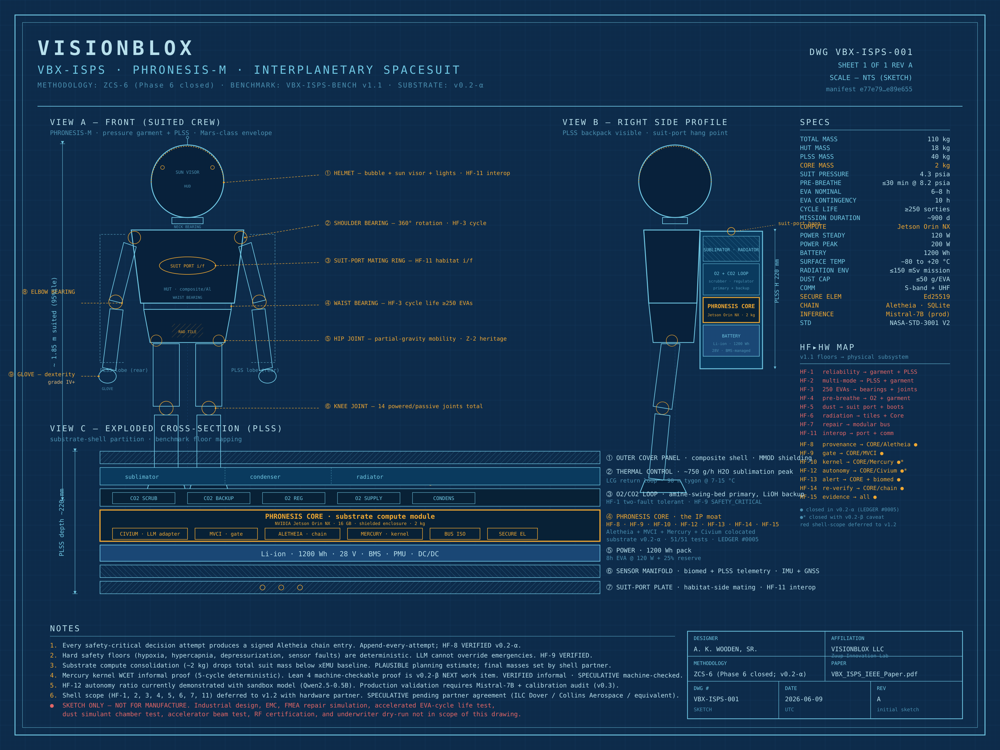
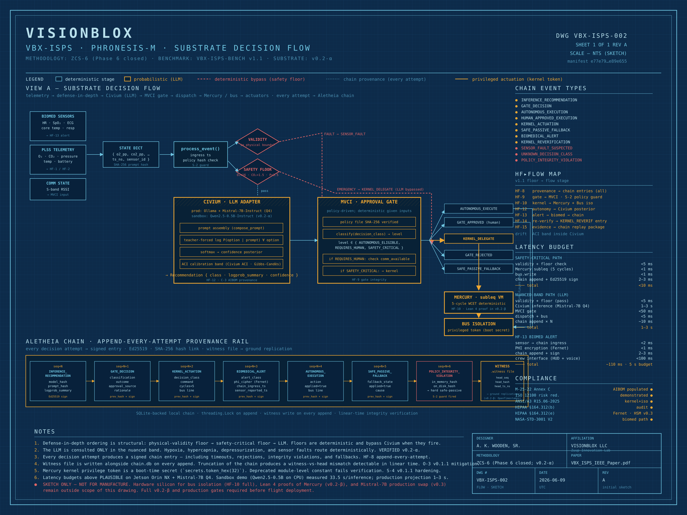

ALETHEIA
Signed provenance chain
Append-only Ed25519-signed ledger, SQLite-backed, witness file, hash-linked.
VerifiedCompliance-graded autonomous decisions for an interplanetary spacesuit — under hard deterministic floors.
A five-layer substrate that treats the LLM as a witness, not an authority. Safety floors evaluate before the model, the subleq kernel deterministically actuates the safety-critical band, and every decision attempt — including timeouts, rejections, and fallbacks — produces a signed, replay-verifiable chain entry. Built and accepted by falsification against a cryptographically frozen benchmark.
The pipeline is deterministic → probabilistic → deterministic. Hard floors run first. The LLM operates only in the nuanced band. The kernel deterministically actuates safety-critical decisions. The privileged-write bus is gated by a boot-time secret token.
Append-only Ed25519-signed ledger, SQLite-backed, witness file, hash-linked.
VerifiedPolicy SHA-256 binding, comm-state branching, safe-passive fallback on blackout.
VerifiedSingle-instruction VM with deterministic 5-cycle WCET. Lean 4 proof in v0.2-β.
PlausibleMistral-7B production / Qwen-0.5B sandbox + adaptive conformal inference.
PlausibleBoot-time secret token gates actuation. Silicon enforcement targeted for v1.0.
PlausiblePLSS biosignal pipeline, p99 measured 1300× under budget.
VerifiedThe substrate is built to be attacked — by its own author first. A correct counter-example beats a clever defense. Honest downward revision of a claim is treated as a feature.
Deterministic safety floors run before the LLM and can bypass it entirely. No LLM output overrides a floor's outcome — ever. The defense-in-depth ordering is non-negotiable.
The Aletheia chain is Ed25519-signed and hash-linked. Truncation paths, unsigned entries, or missing prev_hash linkage fail integrity tests on contact.
VBX-ISPS-BENCH v1.1 is cryptographically committed for the v1.x major. If a candidate fails a floor, the candidate is fixed — not the benchmark.
Every load-bearing claim carries Verified, Plausible, or Speculative. Markers are never stripped to make a document read more confidently.
One pipeline. Three regimes. Every transition emits a signed chain entry, including the negative space — rejections, timeouts, and safe-passive fallbacks.


PLSS telemetry
|
v
[ Civium ] compliance-graded inference (Mistral-7B / Qwen sandbox + ACI)
|
v
[ MVCI Gate ] policy-driven approval classification
|
+--> AUTONOMOUS_ELIGIBLE --> autonomous execution -----+
| |
+--> REQUIRES_HUMAN ----- approved / rejected / blackout
| | |
| v |
| safe-passive fallback -----------+
| |
+--> SAFETY_CRITICAL --> [ Mercury Subleq ] ---> [ Bus ]
formally bounded WCET |
hardware-isolated v
actuation
|
v
[ Aletheia ] append-only Ed25519-signed hash-chained ledger
every decision attempt — signed, replay-verifiable
VBX-ISPS-BENCH v1.1 was cryptographically committed before this solution existed. Every substrate version since — v0.1, v0.1.1, v0.2-α — chains back to it through signed ledger entries.
| Benchmark | VBX-ISPS-BENCH v1.1 |
| Benchmark SHA-256 | 58bf8744d3cc78b1cb7bb88464edb7df796187c45cea1ae483e936249803c1c5 |
| Substrate | v0.2-α |
| Ledger | #0005 · 2026-06-08 23:19:52 UTC |
| Commit root | e77e79a02d836345cc35d9105862f0fb8c42b1c64fdd2af32c4646b53389e655 |
| Predecessor | b123bc28b0f23a65ec9ce221ac07f714e5a3a6cd7e340c408245d2957fff9bfe |
| Test surface | 51 / 51 passing |
$ git clone https://github.com/khaaliswooden-max/PHRONESIS-1.git $ cd PHRONESIS-1 $ pip install --break-system-packages cryptography numpy pytest $ python -m pytest substrate/tests/ -v # expected: 51 passed
The substrate is the IP moat. v1.2 of the benchmark engages a hardware partner for the shell-scope floors. Markers below are bound to the v0.2-α measurement pass.
| Floor | Status | Notes |
|---|---|---|
| HF-8 | Pass | Decision provenance — chain integrity, tamper detection. |
| HF-9 | Pass | Approval gate integrity — 1000-scenario adversarial blackout. |
| HF-10 | Caveat | Kernel + HW isolation — FV deferred to v0.2-β; isolation is software surrogate. |
| HF-12 | Caveat | Effective autonomy ratio — threshold now load-bearing; production Mistral-7B pending. |
| HF-13 | Pass | Biomedical alert latency — p99 measured 1300× under budget. |
| HF-14 | Pass | Kernel re-verification process audit. |
| HF-15 | Pass | Compliance evidence package — structural; underwriter dry-run deferred. |
| Drift | Pass | Static CI collapse vs ACI hold — 1 of 5 distributions; extension deferred. |
Next work item: v0.2-β — Lean 4 machine-checkable proofs of the Mercury subleq emulator and O₂ control loop. After that: HSM/KMS-backed PHI keys, OpenTimestamps anchor + ground replication, and hardware silicon for bus isolation.